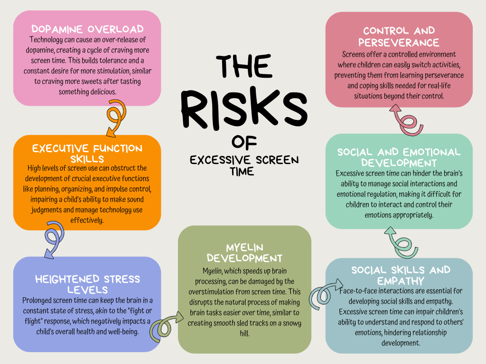

The Impact of Screen Time on the Developing Adolescent Brain
Published on

Image credit: @ The Schreiber Center for Pediatric Development
Recent research has revealed the surprising consequences of excessive screen time on adolescent brain development. While screens are an essential part of modern life, their effect on mental health and cognitive functions cannot be ignored.
Conclusion
While video games can offer certain cognitive and social benefits, it is essential to be aware of their potential negative effects on mental health.